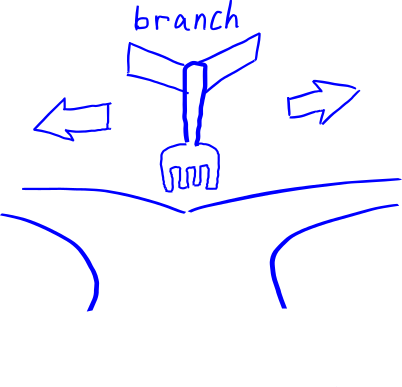
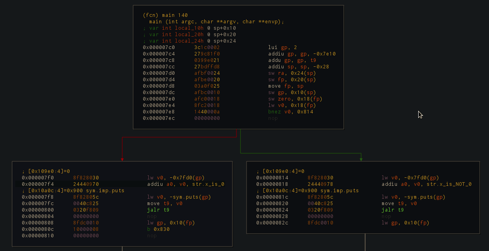

Part 6: Jumps and Branches
The CPU will execute instructions in sequential order from top to bottom. This is good for simple programs but what if we want to do more than just add two numbers? For more complex programs, we may need loops or other conditions and these are accomplished through jumps and branches.
What is a branch?
A branch is like walking and reaching a fork in the road. There are two paths from where you are standing and depending on which path you choose, you will go somewhere else.

When disassembling a program and viewing the graph mode, a typical representation of a branch may look like this:

The fork in the road is where the end of the first block occurs where there is a green arrow and a red arrow leading to separate blocks of code. The green path will be taken if the branch condition is true and the red path will be taken if the branch condition is false.
In this example, bnez $v0, 0x814, if $v0 does NOT contain the number 0, then the code will take the green path and otherwise take the red path.
Branch Delay Slot
Branching seems simple enough; however, in MIPS implementation it is a little bit more nuanced.
When the processor executes an instruction, the program counter is advanced during the Instruction Fetch (IF) stage.
Due to the pipeline structure where when a jump or branch is being executed and the instruction afterwards would also be put into the pipeline, MIPS implements something called the branch delay slot.
Control hazards occur because the $pc after a branch is not known until it is figured out if the branch should be taken or not.
Instead of throwing the next instruction away when taking the branch, the instruction that is directly below a branch or jump always runs whether the branch is taken or not. This is why the instruction position after a branch or jump is called the branch delay slot.
As mentioned before, $pc is modified by 4 after the instruction fetch stage; however, when the branch is taken, $pc is modified during the branch instruction's execution (EX) stage. This affects what is chosen to be the next instruction after the branch delay slot that will be brought into the pipeline.
For the following instructions:
0x7e4 lw $v0, 0x18($fp)
0x7e8 bnez $v0, 0x814
0x7ec noop # branch delay slot
0x7f0 lw $v0, -0x7fd0($gp) # branch NOT taken
0x7f4 addiu $a0, $v0, str.x_is_0
...
0x814 lw $v0, -0x7fd0($gp) # branch taken
0x818 addiu $a0, $v0, str.x_is_NOT_0
If the branch is taken, lw $v0, -0x7fd0($gp) from address 0x814 will be put into the pipeline.
| $pc | Cycles | 1 | 2 | 3 | 4 | 5 | 6 | 7 | 8 | 9 | |
|---|---|---|---|---|---|---|---|---|---|---|---|
| 0x7e4 | lw $v0, 0x18($fp) | IF | ID | EX | ME | WB | |||||
| 0x7e8 | bnez $v0, 0x814 | IF | ID | EX | ME | WB | |||||
| 0x7ec | noop | IF | ID | EX | ME | WB | |||||
| 0x814 | lw $v0, -0x7fd0($gp) | IF | ID | EX | ME | WB | |||||
| 0x818 | addiu $a0, $v0, str.x_is_NOT_0 | IF | ID | EX | ME | WB |
If the branch is NOT taken, $pc has not been modified by the branch instruction's execution stage, so the instruction from address 0x7f0 will be in the pipeline:
| $pc | Cycles | 1 | 2 | 3 | 4 | 5 | 6 | 7 | 8 | 9 | |
|---|---|---|---|---|---|---|---|---|---|---|---|
| 0x7e4 | lw $v0, 0x18($fp) | IF | ID | EX | ME | WB | |||||
| 0x7e8 | bnez $v0, 0x814 | IF | ID | EX | ME | WB | |||||
| 0x7ec | noop | IF | ID | EX | ME | WB | |||||
| 0x7f0 | lw $v0, -0x7fd0($gp) | IF | ID | EX | ME | WB | |||||
| 0x7f4 | addiu $a0, $v0, str.x_is_0 | IF | ID | EX | ME | WB |
Note: When no work is to be performed upon branching, often a noop is placed in the branch delay slot.
So what is a jump?
Jumps and branches both modify the program counter ($pc) in order to change code flow of the program and both utilize the branch delay slot; however, they are different based on how they modify the program counter.
Branches are conditional and are used to provide logic to the program and make it do different things. Branches require several bits in the machine code instruction for the condition so they have less bits to use for the location of the branch. That's why branches use a specified offset from the current program counter and can't go as far as a jump.
Jumps are unconditional and have more bits to go to a specified 26-bit memory address.
In short, jumps can go to code that is a greater distance in memory using an absolute address whereas branches have a shorter range and are relative because they are conditional.